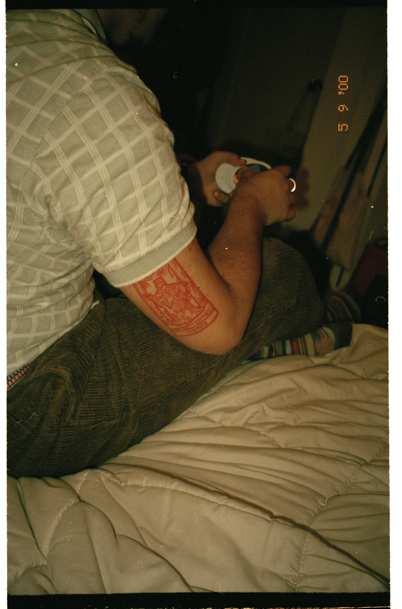

Taro card

Taro card
TATTOO ONE
Name - Simon Chen
Tattoo and placement - Taro card on the left tricept
How old are you? - 19 years old.
How old were you when you got this tattoo? - 19 years old. This year.
How many tattoos do you have in total? - 6
How much did it cost you? - $350
Where did you get it done? - Sang Bleu studio, London.
How long did it take? - 2 hours.
How impulsive was it? - Fairly, I considered it for a few months.
Does this tattoo have a meaning behind it? - This is the most recent one, I really liked the artists work so I got one of his flash tattoos.
Is it your own artwork? - No, I typically ask for the artists own work but I haven’t gotten my own work tattooed.
BACK BACK BACK BACK BACK BACK BACK BACK